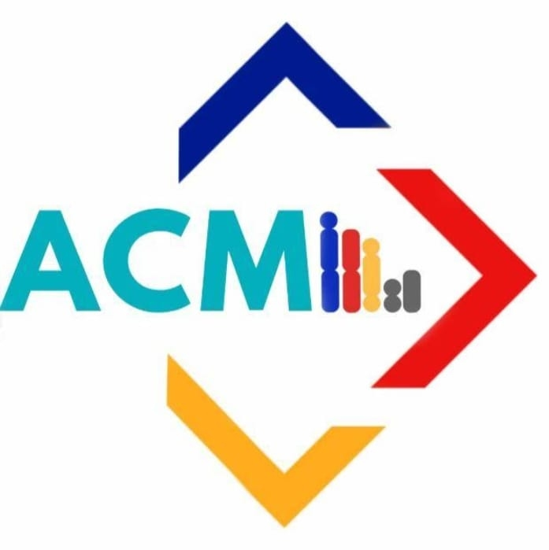
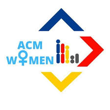

ACM
ACM, the world's largest educational and scientific computing society, delivers resources that advance computing as a science and a profession.

ACM GMRIT
ACM Student Chapter of GMRIT is a student driven body charted on 26th August 2016. From its inception, chapter has initiated several activities for the benefit of engineering students of GMRIT and surrounding institutions, school children as well as local community in and around RAJAM

ACMW GMRIT
ACM-W supports, celebrates, and advocates internationally for the full engagement of women in all aspects of the computing field, providing a wide range of programs and services to ACM members and working in the larger community to advance the contributions of technical women.